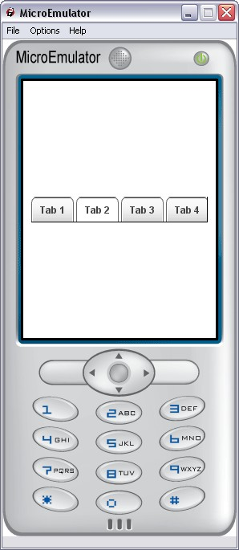

Tabs prototype

Display a bar of tabs.
Proto Parameters
- SFBool enableCycle - this allow user to go from far left tabs to tab 0, when pressing right button, and vice-versa
- MFString elementsLabels - this is tabs labels
- MFString elementsIcons - this is tabs icons
- MFInt32 elementsStates - to set enable and disabled tabs: 0 is enable -1 is disabled
- MFColor elementsColors - to set text color for each tab
- SFInt32 nbElements - total number of element in the list (different of list.nbItems : number of elements shown with the current screenSize)
- SFFloat nbVisibleItems - number of on screen displayed tabs will automatically be set between 2 and 5
- SFBool animationEnable - is sliding animation enable
Events
- SFInt32 update - update all elements, can bet to any value to set focus on this tab
- SFInt32 currentElement - returns the currently selected tab
- SFBool enable - disable proto
Styles
- MFString style - Style for Tabs proto
- SFVec2f size - size of the tab proto
- SFVec2f textScale - textScale for text sizing
- SFTime repeatInterval - used by keysensor
- SFTime repeatDelay - used by keysensor
Left and right filler images
- MFString fillerImage - pictures for left and right arrows background
- SFFloat fillerImageRatio - filler is 28px wide when screen is 240px, 28/240 = 0.117 ratio
- MFString fillerLeftArrows - left arrow pictures
- MFString fillerRightArrows - right arrow pictures
- SFFloat fillerArrowsRatio - filler arrow picture is 11px/21px = 0.524 ratio